Last updated: 2025-06-03
Checks: 7 0
Knit directory: footprint_clustering/
This reproducible R Markdown analysis was created with workflowr (version 1.7.0). The Checks tab describes the reproducibility checks that were applied when the results were created. The Past versions tab lists the development history.
Great! Since the R Markdown file has been committed to the Git repository, you know the exact version of the code that produced these results.
Great job! The global environment was empty. Objects defined in the global environment can affect the analysis in your R Markdown file in unknown ways. For reproduciblity it’s best to always run the code in an empty environment.
The command set.seed(20250530) was run prior to running
the code in the R Markdown file. Setting a seed ensures that any results
that rely on randomness, e.g. subsampling or permutations, are
reproducible.
Great job! Recording the operating system, R version, and package versions is critical for reproducibility.
Nice! There were no cached chunks for this analysis, so you can be confident that you successfully produced the results during this run.
Great job! Using relative paths to the files within your workflowr project makes it easier to run your code on other machines.
Great! You are using Git for version control. Tracking code development and connecting the code version to the results is critical for reproducibility.
The results in this page were generated with repository version 8ab13cb. See the Past versions tab to see a history of the changes made to the R Markdown and HTML files.
Note that you need to be careful to ensure that all relevant files for
the analysis have been committed to Git prior to generating the results
(you can use wflow_publish or
wflow_git_commit). workflowr only checks the R Markdown
file, but you know if there are other scripts or data files that it
depends on. Below is the status of the Git repository when the results
were generated:
Ignored files:
Ignored: .Rhistory
Ignored: .Rproj.user/
Note that any generated files, e.g. HTML, png, CSS, etc., are not included in this status report because it is ok for generated content to have uncommitted changes.
These are the previous versions of the repository in which changes were
made to the R Markdown
(analysis/plot_aggregate_footprint_profiles.Rmd) and HTML
(docs/plot_aggregate_footprint_profiles.html) files. If
you’ve configured a remote Git repository (see
?wflow_git_remote), click on the hyperlinks in the table
below to view the files as they were in that past version.
| File | Version | Author | Date | Message |
|---|---|---|---|---|
| Rmd | 8ab13cb | kevinlkx | 2025-06-03 | wflow_publish("analysis/plot_aggregate_footprint_profiles.Rmd") |
| html | a7416a5 | kevinlkx | 2025-06-03 | Build site. |
| Rmd | b689be2 | kevinlkx | 2025-06-03 | wflow_publish("analysis/plot_aggregate_footprint_profiles.Rmd") |
| html | b3cb0f0 | kevinlkx | 2025-06-03 | Build site. |
| Rmd | 0f500a0 | kevinlkx | 2025-06-03 | wflow_publish("analysis/plot_aggregate_footprint_profiles.Rmd") |
| html | 2c0e42e | kevinlkx | 2025-06-03 | Build site. |
| Rmd | be43eb7 | kevinlkx | 2025-06-03 | wflow_publish("analysis/plot_aggregate_footprint_profiles.Rmd") |
library(tidyverse)
library(data.table)
library(ggplot2)
source("code/plots.R")Here, we explore the accessibility profiles round TF motif match sites.
We scanned CTCF motif matches along the genome, then extended 100bp window on both sides of motif matches.
We downloaded DNase-seq, ATAC-seq and CTCF ChIP-seq data in GM12878 from ENCODE.
About the processed files:
CTCF_MA0139.2_1e-5.candidate.sites.rds: a data frame
of candidate binding sites matching CTCF motif (MA0139.2) (result from
FIMO, p-value < 1e-5).
CTCF.GM12878.sites.chip.labels.rds: a data frame
with the CTCF motif matches (result from FIMO, as in
*.candidate.sites.rds), as well as normalized ChIP-seq
counts (“chip” column) and ChIP-seq peak labels (“chip_label”) in
GM12878.
*.DNase.counts.mat.rds: a matrix where the rows are
the motif matches (in the same order as sites), and the
columns are the DNase-seq counts at each position in the window. The
first half of the columns are counts on the forward strand, and the
second half are counts on the reverse strand. We could simple combine
the counts on both strands as shown below.
*.ATAC.counts.mat.rds: ATAC-seq count matrix,
similar to *.DNase.counts.mat.rds.
sites <- readRDS('/project2/xinhe/kevinluo/footprint_clustering/processed_data/hg38/CTCF_MA0139.2_1e-5.candidate.sites.rds')
sites_chip_labels <- readRDS('/project2/xinhe/kevinluo/footprint_clustering/processed_data/hg38/CTCF.GM12878.sites.chip.labels.rds')
dnase_count_matrix <- readRDS('/project2/xinhe/kevinluo/footprint_clustering/processed_data/hg38/CTCF.GM12878.DNase.counts.mat.rds')
# combine counts on both strands
dnase_count_matrix <- dnase_count_matrix[,1:(ncol(dnase_count_matrix)/2)] + dnase_count_matrix[,(ncol(dnase_count_matrix)/2+1):ncol(dnase_count_matrix)]
atac_count_matrix <- readRDS('/project2/xinhe/kevinluo/footprint_clustering/processed_data/hg38/CTCF.GM12878.ATAC.counts.mat.rds')
# combine counts on both strands
atac_count_matrix <- atac_count_matrix[,1:(ncol(atac_count_matrix)/2)] + atac_count_matrix[,(ncol(atac_count_matrix)/2+1):ncol(atac_count_matrix)]Plot aggregate profiles of DNase-seq and ATAC-seq counts around motif sites.
pos_idx <- which(sites_chip_labels$chip_label == 1)
neg_idx <- which(sites_chip_labels$chip_label == 0)
dnase_pos_profile <- colMeans(dnase_count_matrix[pos_idx, ], na.rm = TRUE)
dnase_neg_profile <- colMeans(dnase_count_matrix[neg_idx, ], na.rm = TRUE)
plot_pos_neg_profiles(dnase_pos_profile, dnase_neg_profile,
title = "Aggregate DNase-seq profiles around CTCF motifs in GM12878")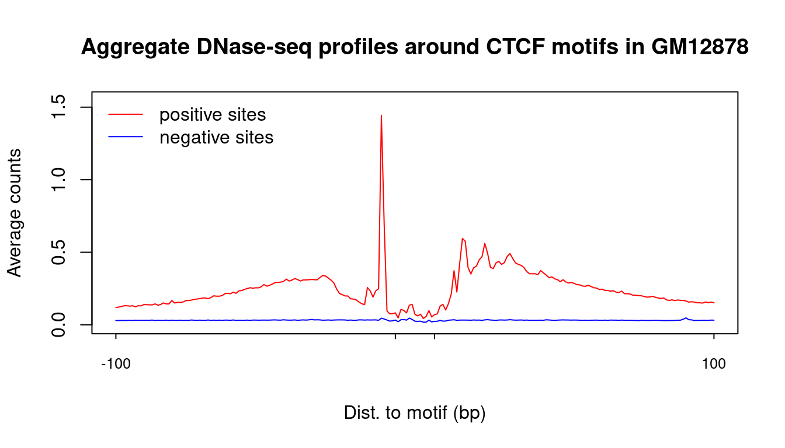
| Version | Author | Date |
|---|---|---|
| 2c0e42e | kevinlkx | 2025-06-03 |
atac_pos_profile <- colMeans(atac_count_matrix[pos_idx, ], na.rm = TRUE)
atac_neg_profile <- colMeans(atac_count_matrix[neg_idx, ], na.rm = TRUE)
plot_pos_neg_profiles(atac_pos_profile, atac_neg_profile,
title = "Aggregate ATAC-seq profiles around CTCF motifs in GM12878")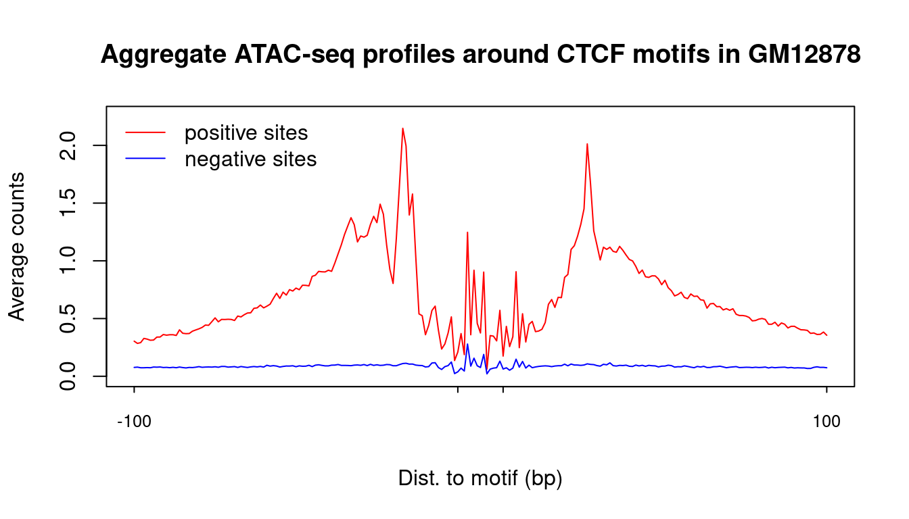
| Version | Author | Date |
|---|---|---|
| 2c0e42e | kevinlkx | 2025-06-03 |
Heatmap of 2000 positive sites and 2000 negative sites
We randomly sample 2000 positive sites and 2000 negative sites, and plot the PWM scores, DNase-seq, ATAC-seq and ChIP-seq results.
set.seed(1)
sites_idx <- c(sample(pos_idx, 2000), sample(neg_idx, 2000))
pwm = sites_chip_labels$pwm.score[sites_idx]
chip = sites_chip_labels$chip[sites_idx]
chip_label = sites_chip_labels$chip_label[sites_idx]
dnase_data = dnase_count_matrix[sites_idx,]
atac_data = atac_count_matrix[sites_idx,]
rank = order(chip_label, chip)
data.l <- list(DNaase = dnase_data,
ATAC = atac_data)
chip.df <- data.frame(chip = chip, chip_label = chip_label)
plot_data_matrix_heatmap(pwm, data.l, chip.df, rank,
data_name = c("DNase-seq", "ATAC-seq"),
chip_name = c("ChIP-seq counts", "ChIP-seq peaks"),
title = "CTCF sites in GM12878",
zMax_data = c(1, 3),
zMax_chip = c(200, 1))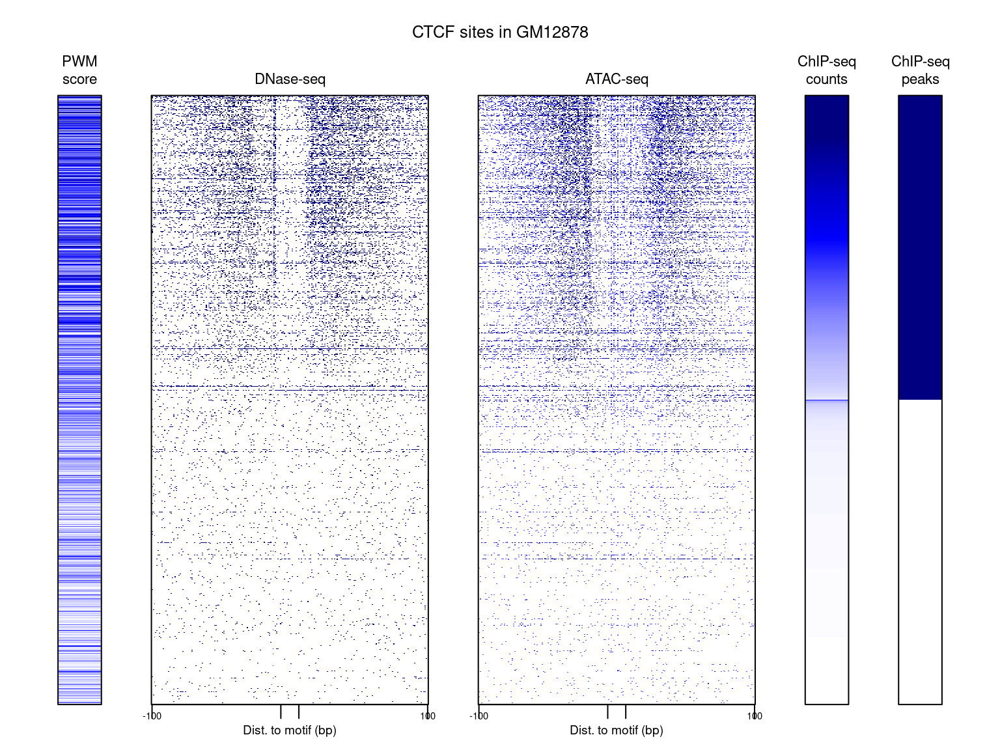
| Version | Author | Date |
|---|---|---|
| 2c0e42e | kevinlkx | 2025-06-03 |
We scanned CTCF motif matches along the genome, then extended 100bp window on both sides of motif matches.
We downloaded DNase-seq, ATAC-seq and CTCF ChIP-seq data in K562 from ENCODE.
# sites <- readRDS('/project2/xinhe/kevinluo/footprint_clustering/processed_data/hg38/CTCF_MA0139.2_1e-5.candidate.sites.rds')
sites_chip_labels <- readRDS('/project2/xinhe/kevinluo/footprint_clustering/processed_data/hg38/CTCF.K562.sites.chip.labels.rds')
dnase_count_matrix <- readRDS('/project2/xinhe/kevinluo/footprint_clustering/processed_data/hg38/CTCF.K562.DNase.counts.mat.rds')
# combine counts on both strands
dnase_count_matrix <- dnase_count_matrix[,1:(ncol(dnase_count_matrix)/2)] + dnase_count_matrix[,(ncol(dnase_count_matrix)/2+1):ncol(dnase_count_matrix)]
atac_count_matrix <- readRDS('/project2/xinhe/kevinluo/footprint_clustering/processed_data/hg38/CTCF.K562.ATAC.counts.mat.rds')
# combine counts on both strands
atac_count_matrix <- atac_count_matrix[,1:(ncol(atac_count_matrix)/2)] + atac_count_matrix[,(ncol(atac_count_matrix)/2+1):ncol(atac_count_matrix)]Plot aggregate profiles of DNase-seq and ATAC-seq counts around motif sites.
pos_idx <- which(sites_chip_labels$chip_label == 1)
neg_idx <- which(sites_chip_labels$chip_label == 0)
dnase_pos_profile <- colMeans(dnase_count_matrix[pos_idx, ], na.rm = TRUE)
dnase_neg_profile <- colMeans(dnase_count_matrix[neg_idx, ], na.rm = TRUE)
plot_pos_neg_profiles(dnase_pos_profile, dnase_neg_profile,
title = "Aggregate DNase-seq profiles around CTCF motifs in K562")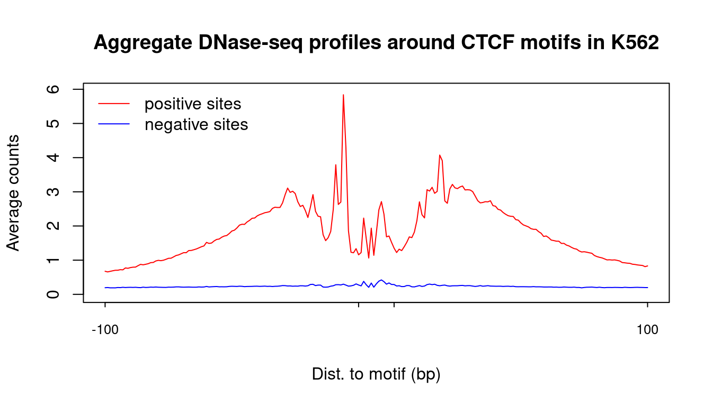
| Version | Author | Date |
|---|---|---|
| 2c0e42e | kevinlkx | 2025-06-03 |
atac_pos_profile <- colMeans(atac_count_matrix[pos_idx, ], na.rm = TRUE)
atac_neg_profile <- colMeans(atac_count_matrix[neg_idx, ], na.rm = TRUE)
plot_pos_neg_profiles(atac_pos_profile, atac_neg_profile,
title = "Aggregate ATAC-seq profiles around CTCF motifs in K562")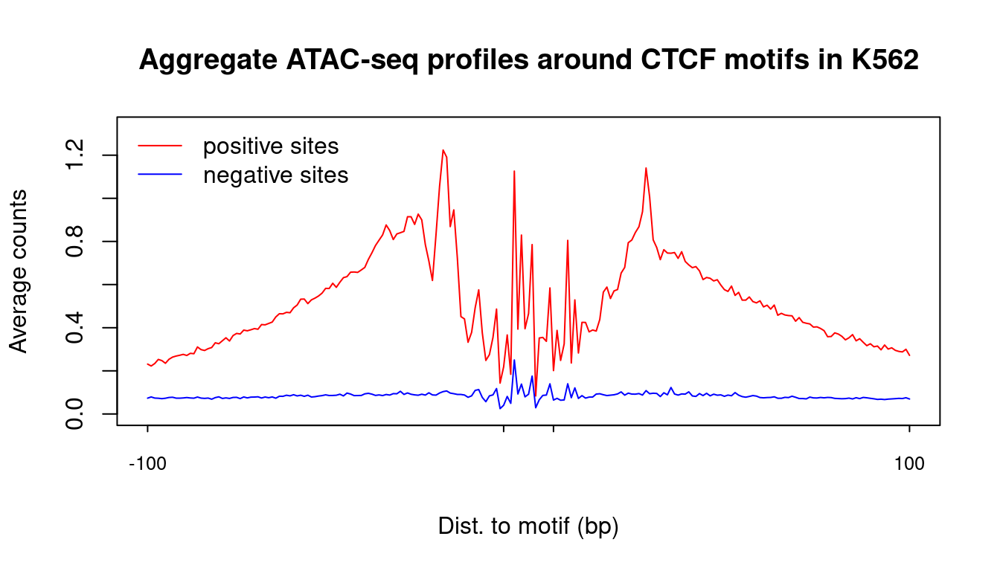
| Version | Author | Date |
|---|---|---|
| 2c0e42e | kevinlkx | 2025-06-03 |
Heatmap of 2000 positive sites and 2000 negative sites
We randomly sample 2000 positive sites and 2000 negative sites, and plot the PWM scores, DNase-seq, ATAC-seq and ChIP-seq results.
set.seed(1)
sites_idx <- c(sample(pos_idx, 2000), sample(neg_idx, 2000))
pwm = sites_chip_labels$pwm.score[sites_idx]
chip = sites_chip_labels$chip[sites_idx]
chip_label = sites_chip_labels$chip_label[sites_idx]
dnase_data = dnase_count_matrix[sites_idx,]
atac_data = atac_count_matrix[sites_idx,]
rank = order(chip_label, chip)
data.l <- list(DNaase = dnase_data,
ATAC = atac_data)
chip.df <- data.frame(chip = chip, chip_label = chip_label)
plot_data_matrix_heatmap(pwm, data.l, chip.df, rank,
data_name = c("DNase-seq", "ATAC-seq"),
chip_name = c("ChIP-seq counts", "ChIP-seq peaks"),
title = "CTCF sites in K562",
zMax_data = c(1, 3),
zMax_chip = c(200, 1))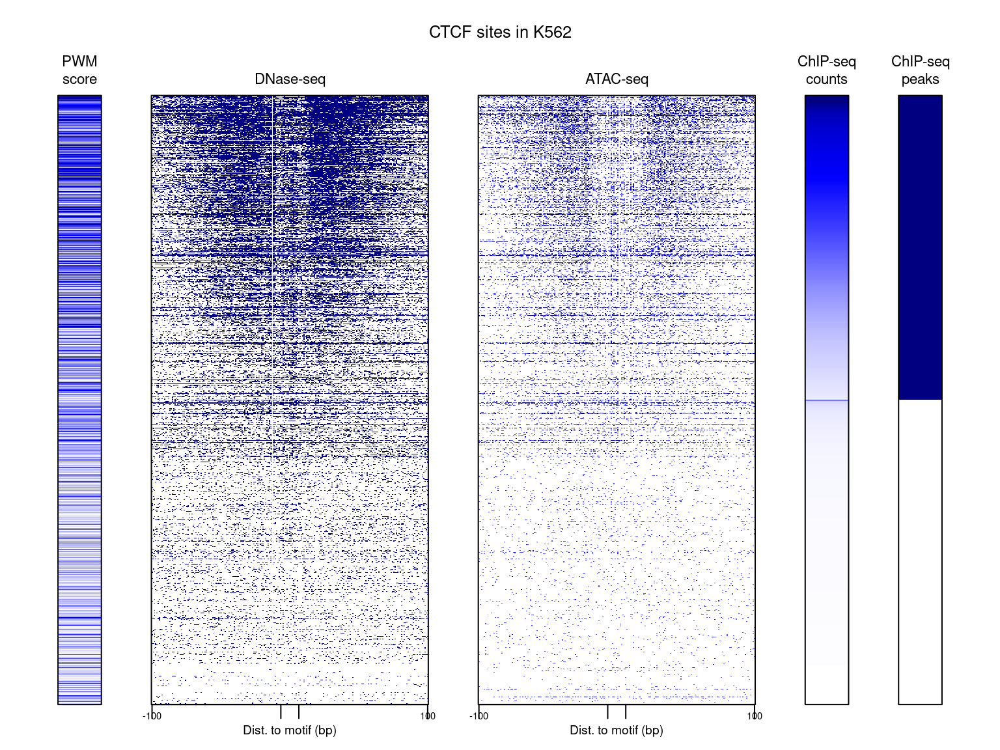
| Version | Author | Date |
|---|---|---|
| 2c0e42e | kevinlkx | 2025-06-03 |
We scanned REST motif matches along the genome, then extended 100bp window on both sides of motif matches.
We downloaded DNase-seq, ATAC-seq and REST ChIP-seq data in GM12878 from ENCODE.
# sites <- readRDS('/project2/xinhe/kevinluo/footprint_clustering/processed_data/hg38/REST_MA0138.3_1e-5.candidate.sites.rds')
sites_chip_labels <- readRDS('/project2/xinhe/kevinluo/footprint_clustering/processed_data/hg38/REST.GM12878.sites.chip.labels.rds')
dnase_count_matrix <- readRDS('/project2/xinhe/kevinluo/footprint_clustering/processed_data/hg38/REST.GM12878.DNase.counts.mat.rds')
# combine counts on both strands
dnase_count_matrix <- dnase_count_matrix[,1:(ncol(dnase_count_matrix)/2)] + dnase_count_matrix[,(ncol(dnase_count_matrix)/2+1):ncol(dnase_count_matrix)]
atac_count_matrix <- readRDS('/project2/xinhe/kevinluo/footprint_clustering/processed_data/hg38/REST.GM12878.ATAC.counts.mat.rds')
# combine counts on both strands
atac_count_matrix <- atac_count_matrix[,1:(ncol(atac_count_matrix)/2)] + atac_count_matrix[,(ncol(atac_count_matrix)/2+1):ncol(atac_count_matrix)]Plot aggregate profiles of DNase-seq and ATAC-seq counts around motif sites.
pos_idx <- which(sites_chip_labels$chip_label == 1)
neg_idx <- which(sites_chip_labels$chip_label == 0)
dnase_pos_profile <- colMeans(dnase_count_matrix[pos_idx, ], na.rm = TRUE)
dnase_neg_profile <- colMeans(dnase_count_matrix[neg_idx, ], na.rm = TRUE)
plot_pos_neg_profiles(dnase_pos_profile, dnase_neg_profile,
title = "Aggregate DNase-seq profiles around REST motifs in GM12878")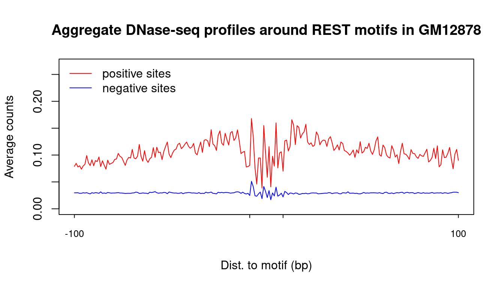
| Version | Author | Date |
|---|---|---|
| 2c0e42e | kevinlkx | 2025-06-03 |
atac_pos_profile <- colMeans(atac_count_matrix[pos_idx, ], na.rm = TRUE)
atac_neg_profile <- colMeans(atac_count_matrix[neg_idx, ], na.rm = TRUE)
plot_pos_neg_profiles(atac_pos_profile, atac_neg_profile,
title = "Aggregate ATAC-seq profiles around REST motifs in GM12878")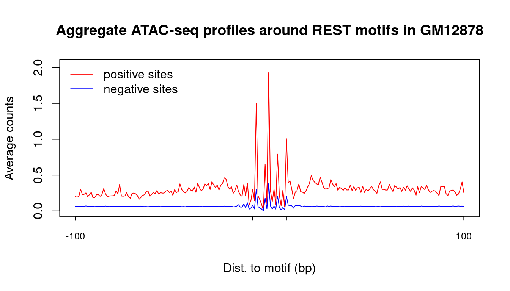
| Version | Author | Date |
|---|---|---|
| 2c0e42e | kevinlkx | 2025-06-03 |
Heatmap of 2000 positive sites and 2000 negative sites
We randomly sample 2000 positive sites and 2000 negative sites, and plot the PWM scores, DNase-seq, ATAC-seq and ChIP-seq results.
set.seed(1)
sites_idx <- c(sample(pos_idx, 2000), sample(neg_idx, 2000))
pwm = sites_chip_labels$pwm.score[sites_idx]
chip = sites_chip_labels$chip[sites_idx]
chip_label = sites_chip_labels$chip_label[sites_idx]
dnase_data = dnase_count_matrix[sites_idx,]
atac_data = atac_count_matrix[sites_idx,]
rank = order(chip_label, chip)
data.l <- list(DNaase = dnase_data,
ATAC = atac_data)
chip.df <- data.frame(chip = chip, chip_label = chip_label)
plot_data_matrix_heatmap(pwm, data.l, chip.df, rank,
data_name = c("DNase-seq", "ATAC-seq"),
chip_name = c("ChIP-seq counts", "ChIP-seq peaks"),
title = "REST sites in GM12878",
zMax_data = c(1, 3),
zMax_chip = c(200, 1))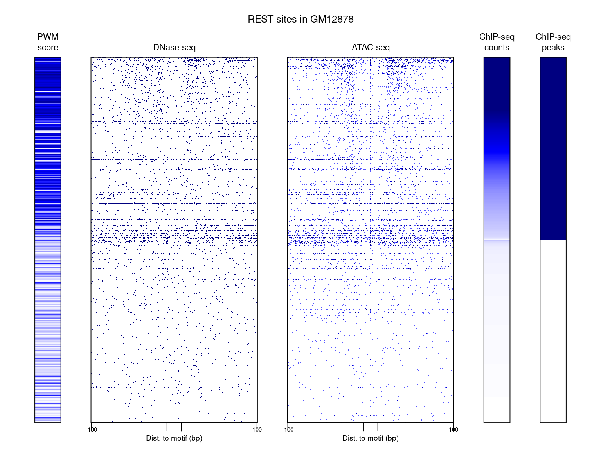
| Version | Author | Date |
|---|---|---|
| 2c0e42e | kevinlkx | 2025-06-03 |
We scanned REST motif matches along the genome, then extended 100bp window on both sides of motif matches.
We downloaded DNase-seq, ATAC-seq and REST ChIP-seq data in K562 from ENCODE.
# sites <- readRDS('/project2/xinhe/kevinluo/footprint_clustering/processed_data/hg38/REST_MA0138.3_1e-5.candidate.sites.rds')
sites_chip_labels <- readRDS('/project2/xinhe/kevinluo/footprint_clustering/processed_data/hg38/REST.K562.sites.chip.labels.rds')
dnase_count_matrix <- readRDS('/project2/xinhe/kevinluo/footprint_clustering/processed_data/hg38/REST.K562.DNase.counts.mat.rds')
# combine counts on both strands
dnase_count_matrix <- dnase_count_matrix[,1:(ncol(dnase_count_matrix)/2)] + dnase_count_matrix[,(ncol(dnase_count_matrix)/2+1):ncol(dnase_count_matrix)]
atac_count_matrix <- readRDS('/project2/xinhe/kevinluo/footprint_clustering/processed_data/hg38/REST.K562.ATAC.counts.mat.rds')
# combine counts on both strands
atac_count_matrix <- atac_count_matrix[,1:(ncol(atac_count_matrix)/2)] + atac_count_matrix[,(ncol(atac_count_matrix)/2+1):ncol(atac_count_matrix)]Plot aggregate profiles of DNase-seq and ATAC-seq counts around motif sites.
pos_idx <- which(sites_chip_labels$chip_label == 1)
neg_idx <- which(sites_chip_labels$chip_label == 0)
dnase_pos_profile <- colMeans(dnase_count_matrix[pos_idx, ], na.rm = TRUE)
dnase_neg_profile <- colMeans(dnase_count_matrix[neg_idx, ], na.rm = TRUE)
plot_pos_neg_profiles(dnase_pos_profile, dnase_neg_profile,
title = "Aggregate DNase-seq profiles around REST motifs in K562")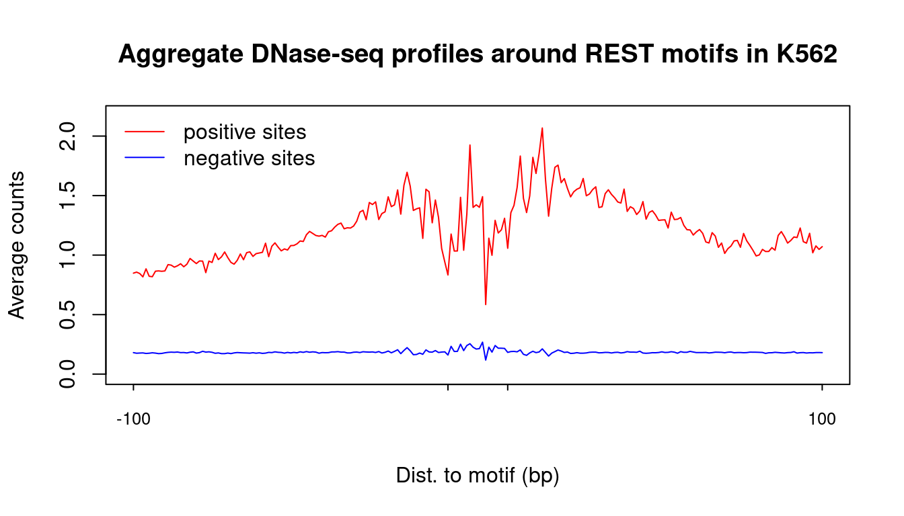
| Version | Author | Date |
|---|---|---|
| 2c0e42e | kevinlkx | 2025-06-03 |
atac_pos_profile <- colMeans(atac_count_matrix[pos_idx, ], na.rm = TRUE)
atac_neg_profile <- colMeans(atac_count_matrix[neg_idx, ], na.rm = TRUE)
plot_pos_neg_profiles(atac_pos_profile, atac_neg_profile,
title = "Aggregate ATAC-seq profiles around REST motifs in K562")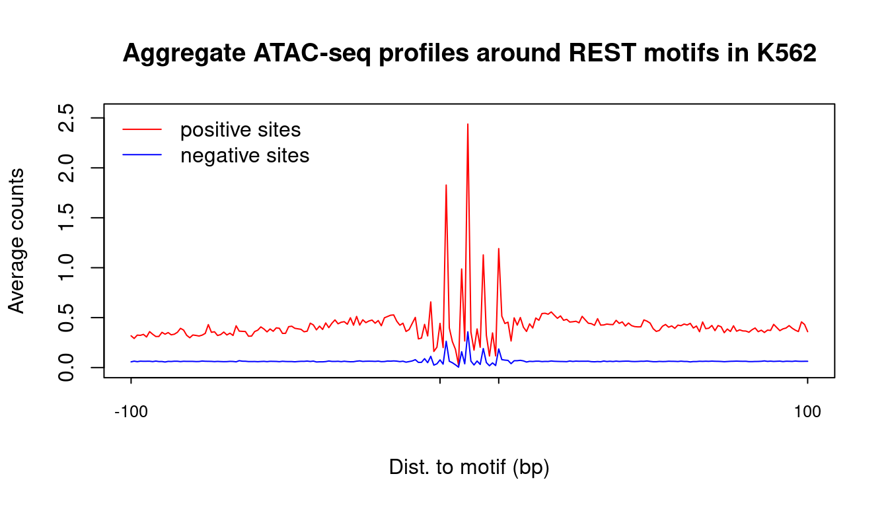
| Version | Author | Date |
|---|---|---|
| 2c0e42e | kevinlkx | 2025-06-03 |
Heatmap of 2000 positive sites and 2000 negative sites
We randomly sample 2000 positive sites and 2000 negative sites, and plot the PWM scores, DNase-seq, ATAC-seq and ChIP-seq results.
set.seed(1)
sites_idx <- c(sample(pos_idx, 2000), sample(neg_idx, 2000))
pwm = sites_chip_labels$pwm.score[sites_idx]
chip = sites_chip_labels$chip[sites_idx]
chip_label = sites_chip_labels$chip_label[sites_idx]
dnase_data = dnase_count_matrix[sites_idx,]
atac_data = atac_count_matrix[sites_idx,]
rank = order(chip_label, chip)
data.l <- list(DNaase = dnase_data,
ATAC = atac_data)
chip.df <- data.frame(chip = chip, chip_label = chip_label)
plot_data_matrix_heatmap(pwm, data.l, chip.df, rank,
data_name = c("DNase-seq", "ATAC-seq"),
chip_name = c("ChIP-seq counts", "ChIP-seq peaks"),
title = "REST sites in K562",
zMax_data = c(1, 3),
zMax_chip = c(200, 1))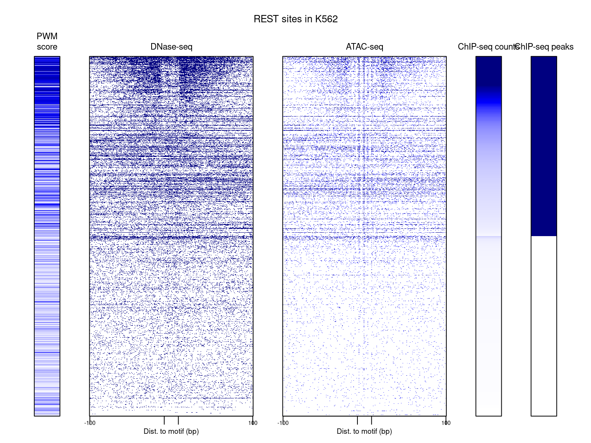
| Version | Author | Date |
|---|---|---|
| 2c0e42e | kevinlkx | 2025-06-03 |
sessionInfo()#> R version 4.2.0 (2022-04-22)
#> Platform: x86_64-pc-linux-gnu (64-bit)
#> Running under: CentOS Linux 7 (Core)
#>
#> Matrix products: default
#> BLAS/LAPACK: /software/openblas-0.3.13-el7-x86_64/lib/libopenblas_haswellp-r0.3.13.so
#>
#> locale:
#> [1] LC_CTYPE=en_US.UTF-8 LC_NUMERIC=C LC_TIME=C
#> [4] LC_COLLATE=C LC_MONETARY=C LC_MESSAGES=C
#> [7] LC_PAPER=C LC_NAME=C LC_ADDRESS=C
#> [10] LC_TELEPHONE=C LC_MEASUREMENT=C LC_IDENTIFICATION=C
#>
#> attached base packages:
#> [1] stats graphics grDevices utils datasets methods base
#>
#> other attached packages:
#> [1] data.table_1.14.2 forcats_0.5.1 stringr_1.5.1 dplyr_1.1.4
#> [5] purrr_1.0.2 readr_2.1.2 tidyr_1.3.1 tibble_3.2.1
#> [9] ggplot2_3.5.1 tidyverse_1.3.1 workflowr_1.7.0
#>
#> loaded via a namespace (and not attached):
#> [1] tidyselect_1.2.1 xfun_0.30 bslib_0.3.1 haven_2.5.0
#> [5] colorspace_2.0-3 vctrs_0.6.5 generics_0.1.2 htmltools_0.5.2
#> [9] yaml_2.3.5 rlang_1.1.4 jquerylib_0.1.4 later_1.3.0
#> [13] pillar_1.10.1 withr_2.5.0 glue_1.6.2 DBI_1.1.2
#> [17] dbplyr_2.1.1 readxl_1.4.0 modelr_0.1.8 lifecycle_1.0.4
#> [21] cellranger_1.1.0 munsell_0.5.0 gtable_0.3.0 rvest_1.0.2
#> [25] evaluate_0.15 knitr_1.39 tzdb_0.3.0 callr_3.7.3
#> [29] fastmap_1.1.0 httpuv_1.6.5 ps_1.7.0 highr_0.9
#> [33] broom_0.8.0 Rcpp_1.0.12 promises_1.2.0.1 backports_1.4.1
#> [37] scales_1.3.0 jsonlite_1.8.0 fs_1.5.2 hms_1.1.1
#> [41] digest_0.6.29 stringi_1.7.6 processx_3.8.0 getPass_0.2-2
#> [45] rprojroot_2.0.3 grid_4.2.0 cli_3.6.3 tools_4.2.0
#> [49] magrittr_2.0.3 sass_0.4.1 crayon_1.5.1 whisker_0.4
#> [53] pkgconfig_2.0.3 ellipsis_0.3.2 xml2_1.3.3 reprex_2.0.1
#> [57] lubridate_1.8.0 assertthat_0.2.1 rmarkdown_2.14 httr_1.4.3
#> [61] rstudioapi_0.13 R6_2.5.1 git2r_0.30.1 compiler_4.2.0